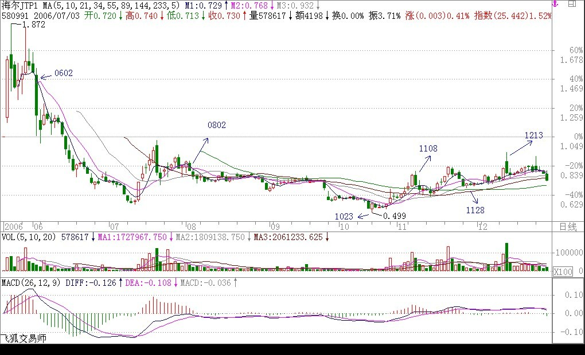

|
 |
教你炒股票16：中小资金的高效买卖法。
(2006-12-14 12:06:47)
（注意此处盘整还是前期的定义，下跌盘整下跌整体为后期定义的一个盘整走势）（此例子盘整为中枢，级别大于下跌）
上章说过，市场任何品种任何周期下的走势图，都可以分解成上涨、下跌、盘整三种基本情况的组合。上涨、下跌构成趋势，如何判断趋势与盘整，是判断走势的核心问题（娇：注意定义前后的不同）。一个最基本的问题就是，走势是分级别的，在30分钟上的上涨，可能在日线图上只是盘整的一段甚至是下跌中的反弹，所以抛开级别前提而谈论趋势与盘整是毫无意义的，这必须切实把握。注意，下面以及前面的讨论，如没有特别声明，都是在同级别的层面上展开的，只有把同级别的事情弄明白了，才可以把不同级别走势组合在一切研究，这是后面的事情了。
上涨、下跌、盘整三种基本走势，有六种组合可能代表着三类不同的走势：
陷阱式：上涨 下跌；下跌 上涨。
反转式：上涨 盘整 下跌；下跌 盘整 上涨。
中继式：上涨 盘整 上涨；下跌 盘整 下跌。
市场的走势，都可能通过这三类走势得以分解和研究。站在多头的角度，首先要考虑的是买入，因此，上面六种最基本走势中，有买入价值的是：下跌上涨、下跌盘整上涨、上涨盘整上涨三种。没有买入价值的是：上涨下跌；上涨盘整下跌；下跌盘整下跌。由此不难发现，如果在一个下跌走势中买入，其后只会遇到一种没买入价值的走势，就是下跌盘整下跌，这比在上涨时买入要少一种情况。
而在下跌时买入，唯一需要躲避的风险有两个：一、该段跌势未尽；二、该段跌势虽尽，但盘整后出现下一轮跌势。
在上一章没有趋势没有背驰中，对下跌走势用背驰来找第一类买点，就是要避开上面的第一个风险。而当买入后，将面对的是第二个风险，如何避开？就是其后一旦出现盘整走势，必须先减仓退出。为什么不全部退出，因为盘整后出现的结果有两种：上涨、下跌，一旦出现下跌就意味着亏损，而且盘整也会耗费时间，对于中小资金来说，完全没必要。这里有一个很重要的问题留待后面分析，就是如何判断盘整后是上涨还是下跌，如果把握了这个技巧，就可以根据该判断来决定是减仓退出还是利用盘整动态建仓了（注：重要的问题指如何判断3买）。这是一个大问题，特别对于不想坐庄的大资金来说，这是一个最重要的问题，因为不想坐庄的大资金的安全建仓在六种走势中只可能在下跌盘整上涨这一种，其他都不适用。至于坐庄的建仓方法，和这些都不同，如有兴趣，本ID以后也可以说的。
根据上面的分析，可以马上设计一种行之有效的买卖入方法：在第一类买点买入后，一旦出现盘整走势，无论后面如何，都马上退出。这种买卖方法的实质，就是在六种最基本的走势中，只参与唯一的一种：下跌上涨。对于资金量不大的，这是最有效的一种买卖方法。下面重点分析：
对于下跌上涨来说，连接下跌前面的可能走势只会有两种：上涨和盘整。如果是上涨下跌上涨，那意味着这种走势在上一级别的图形中是一个盘整，因此这种走势可以归纳在盘整的操作中，这在以后对盘整的专门分析里研究。换言之，对于只操作“下跌上涨”买卖的，“上涨下跌上涨”走势不考虑，也就是说，当你希望用“下跌上涨”买卖方法介入一只出现第一类买点的股票，如果其前面的走势是“上涨下跌”，则不考虑。注意，不考虑不意味着这种情况没有赢利可能，而只是这种情况可以归到盘整类型的操作中，但“下跌上涨”买卖方法是拒绝参与盘整的。如此一来，按该种方法，可选择的股票又少了，只剩下这样一种情况，就是“盘整下跌上涨”。
从上面的分析可以很清楚地看到，对于“下跌上涨”买卖方法方法来说，必须是这样一种情况：就是一个前面是“盘整下跌”型的走势后出现第一类买点。显然，这个下跌是跌破前面盘整的，否则就不会构成“盘整下跌”型，只会仍是盘整。那么在该盘整前的走势，也只有两种：上涨、下跌。对于“上涨盘整下跌”的，也实质上构成高一级别的盘整，因此对于“下跌上涨”买卖方法方法来说也不能参与这种情况，因此也就是只剩下这样一种情况：“下跌盘整下跌”。
综上所述，对于“下跌上涨”买卖方法方法来说，对股票的选择就只有一种情况，就是：出现第一类买点且之前走势是“下跌盘整下跌”类型。因此这里就得到了用“下跌上涨”买卖方法方法选择买入品种的标准程序：
一、首先只选择出现“下跌盘整下跌”走势的。
二、在该走势的第二段下跌出现第一类买点时介入。
三、介入后，一旦出现盘整走势，坚决退出。
注意，这个退出肯定不会亏钱的，因为可以利用低一级别的第一类卖点退出，是肯定要赢利的。但为什么要退出，因为它不符合“下跌上涨”买卖不参与盘整的标准，盘整的坏处是浪费时间，而且盘整后存在一半的可能是下跌，对于中小资金来说，根本没必要参与。一定要记住，操作一定要按标准来，这样才是最有效率的。如果买入后不出现盘整，那就要彻底恭喜你了，因为这股票将至少回升到“下跌盘整下跌”的盘整区域，如果在日线或周线上出现这种走势，进而发展成为大黑马的可能是相当大的。
举一个例子：
驰宏锌锗：日线上：
2004年6月2日到2004年9月10日，构成下跌走势；
2004年9月10日到2005年3月14日，构成盘整走势；
2005年3月14日到2005年7月27日，构成下跌走势。
也就是说，从2004年6月2日到2005年7月27日，构成标准的“下跌盘整下跌”的走势，而在相应的2005年3月14日到2005年7月27日的第二次下跌走势中，7月27日出现明显的第一类买点，这就完美地构成了“下跌上涨”买卖方法的标准买入信号。其后走势，很快就回到2004年9月10日到2005年3月14日的盘整区间，然后回调在2005年12月8日出现标准的第二类买点，其后走势就不用多说了。
该种方法反过来就是选择卖点的好方法了，也就是说前面出现“上涨盘整上涨”走势的，一旦第二段升势出现第一类卖点，一定要走，因为后面很可能就是“上涨下跌”的典型走势。
对此，也举一个例子：北辰实业，在30分钟图上：
11月7日10点30分到11月22日10点，构成上涨；
11月22日10点到11月30日11点构成盘整；
11月30日11点到12月7日10点构成上涨。
而在第二段上涨中，30分钟图上的3次红柱子放大，一次比一次矮所显示的严重背离（MACD 红绿柱子背离黄白线不背代表小级别背离。此处递归级别1分趋势背驰在30分图MACD表现。），就完美地构成了“上涨盘整上涨”后出现第一类卖点的“上涨下跌”型卖出。如果以后学了时间之窗的概念，对该股的卖点就更有把握了，各位注意到11月7日10点30分和12月7日10点之间的关系没有（低点到高点一个月）。
这种方法，无论买卖，都极为适用于中小资金，如果把握得好，是十分高效的，不过要多多看图，认真体会，变成自己的直觉才行。另外请多看文章后面的跟贴，ID的一些回复都是针对一些主帖没所到的细节东西，而且都是针对各位提出的不同问题的。还有多看前面的章节，把所有问题都搞懂，参与市场是不能有半点糊涂的。
每日解盘（2006-12-14
12:38:11 ）
缠中说禅：2006-12-14 12:38:11
[匿名] ataoo02006-12-14 12:31:06
缠中说禅2006-11-29 15:14:38
从大盘健康的角度说，本ID给大盘的建议是：先深成指突破6103点的历史高位，然后上海跟上，突破以后再调整，这样更健康。不知道大盘有没有兴趣听本ID的意见了。 ============
其实上海、深圳谁先突破都不重要，大盘现在只是牛市的第一阶段，关键心态要好。别大盘晃两下就怕。本ID再把一句说过的话再说一次：牛市里，跌就是爹。还要严重再次反复说：第一阶段主力是成分股，看看1000点上来，是不是这样！
缠中说禅：2006-12-14 15:10:16
创历史新高这种无聊事情就别想那么多了，随着行情的展开，不断往上就不断创历史新高。心态平稳点，牛市的第一轮行情就受不了，那到第三轮垃圾股漫天飞时，那不找不到站的地方？
---------------------------------------------------------------------------------------------
[匿名] 快2006-12-14 12:24:34
LZ,当前点位,更适合分散持仓还是集中持仓,资金50万左右
===========
最多不要超过3只。你这种资金，学好这种方法，用30分钟图或日线图，1年下来达不到300%的赢利，那算太差劲了。
(2006-12-14 12:28:10)
------
昨天的作业，主要是要各位搞清楚用MACD看背驰是该怎么看。并不是见柱子就要比较长短，一定要结合趋势来。记住，没有趋势没有背驰，好好理解这句话。背驰是两个趋势之间比较才有意义，和盘整里比较是没用的。
昨天各位的答案都不正确，看完今天的文章，请继续用580991进行分析，结合今天的方法。提示一下，该日线图上只有一个背驰点，也就是说只有一个第一类买点。本ID把答案说出来很简单，但更有效的是各位自己通过研究尽量发现，这样才深刻理解。
明天公布最终答案。
注意这一点
背驰是两个趋势之间比较才有意义，和盘整里比较是没用的。
(2006-12-14 12:34:06)
------
[匿名] 阿Q2006-12-14 12:35:12
缠姐姐，能不能在给我们讲一下资金的合理配置？比如说建仓的时候用掉多少，第一个卖点卖多少，加仓时加多少，最后卖掉的话是不是一定要全部卖光？这个方面我挺难把握的。谢谢！
==========
这些问题都自然要说到，关键是把基本的方法搞清楚，现在看，基本连背驰搞清楚的都没有。 没有趋势，没有背驰。背驰是两个趋势之间比较才有意义，和盘整里比较是没用的。 好好理解。
(2006-12-14 12:39:41)
------
[匿名] nn2006-12-14
12:36:19
谢谢楼主.楼主辛苦了,请教一个问题,中小资金与大资金在分批(或分配)上要不要(有没有必要)区分一下,即仓位的管理问题,还有就是上班一族能不能象你说的那样高效利用资金?相比楼主的方法,俺只能算守株待兔了,完全谈不上效率,谢谢指教!
==========
上班的看日线就可以。
(2006-12-14 12:45:06)
------
[匿名] 缠绵不觉2006-12-14 12:44:49
授人以渔，其德大焉趋势怎样看出来呢？靠K线？
=========
你要反复将前面的研究透，这个问题在15已经说得很清楚了。不能前面的课落了一大截，那现在怎么跟得上。
(2006-12-14 12:46:38)
------
[匿名] 无言2006-12-14 12:54:08
缠姐,你好,日线图上第一类买点出现时,K线组合都十分难看,如何能判别该股中线行情力度的大小?是看周线图上各条均线的位置吗?能否详细讲解?谢谢
=============
这个问题以后会说到，先把这个方法研究清楚。谁掌握了这个方法，95%的人都不是你对手了。
(2006-12-14 12:55:55)
------
[匿名] 心易2006-12-14 12:55:56
580991在日线图上的第一类买点分析如下：10月23日，0.50元附近。对否请博主指正。谢谢！
=================
现在问你是如何看出背驰的，这才是关键，有背驰才有第一类买点，把逻辑关键搞清楚。
开盘，先下，再见
(2006-12-14 13:00:04)
------
[匿名] 朗月无花
2006-12-14 12:56:07
楼主最近成了股票专题了，你写论语回帖也是股票，对于我们这些股盲们实在是难受啊，能不能也照顾照顾我们啊
===========
关键你们不提有关论语等的问题，你看前面，有提人民币的问题，本ID也回答了。你在这里也可以提其他问题的。
下，再见。
(2006-12-14 13:01:27)
------
创历史新高这种无聊事情就别想那么多了，随着行情的展开，不断往上就不断创历史新高。心态平稳点，牛市的第一轮行情就受不了，那到第三轮垃圾股漫天飞时，那不找不到站的地方？
(2006-12-14 15:10:16)
------
[匿名] 悠悠悠哉2006-12-14 15:14:57
大姐 我有个问题 那盘整多久才算是盘整啊
============
这证明你根本没理解什么是盘整，只要走出盘整的形态就是盘整，和时间根本没关系。国外有些股票，一盘盘10年8年的一点都不奇怪。关键是形态。
(2006-12-14 15:18:14)
------
[匿名] 想飞2006-12-14 14:51:21
LZ，驰宏锌锗日线上，2004/6/2~2004/9/10，如果没有后面的走势，应该也可以看作“下跌-盘整-下跌”走势，2004/8/23出现第一买点，对吗？
=============
对也不对。不对在于，在日线上并不是“下跌-盘整-下跌”，但在30分钟线上是，所以说对也不对。该段走势在日线上只构成一个下跌，这里面的微妙之处，好好体会。
(2006-12-14 15:25:45)
------
[匿名] 想飞2006-12-14 14:43:48
“盘整：最近一个高点比前一高点高，且最近一个低点比前一低点低；或者最近一个高点比前一高点低，且最近一个低点比前一低点高。”
LZ，这句话看似简单，但要落实到实践中还是有一定的难度的，最好以驰宏锌锗为例，选两个点说明一下，这样比较直观，好理解
请一定不要嫌麻烦，不理解这个，我的作业又会交不出的的
=============
下跌盘整，用肉眼就可以看出来，除非连高点和低点都分不清楚。注意，这里并不需要预测，只要看前面已经走出来的图形。
好好研究一下本ID这两段话：
驰宏锌锗：日线上，2004年6月2日到2004年9月10日，构成下跌走势； 2004年9月10日到2005年3月14日，构成盘整走势；2005年3月14日到2005年7月27日，构成下跌走势。也就是说，从2004年6月2日到2005年7月27日，构成标准的“下跌+盘整+下跌”的走势，而在相应的2005年3月14日到2005年7月27日的第二次下跌走势中，7月27日出现明显的第一类买点，这就完美地构成了“下跌+上涨”买卖方法的标准买入信号。其后走势，很快就回到2004年9月10日到2005年3月14日的盘整区间，然后回调在2005年12月8日出现标准的第二类买点，其后走势就不用多说了。
缠中说禅(2006-12-14
15:31:32)
------
悠悠悠哉 2006-12-14
15:27:37
比如说区间破了特别是庄稼时代大都会回来确认的碰到慢性子他再盘会我一追就套看盘了又走那岂不是被玩死还要考虑是不是真破还是诱多？
悠悠悠哉
2006-12-14 15:29:51
还有不到收盘是看不出今天正真意图的 他一个吸盘 指标全破了 收盘或明后天又拉回来 那该如何是好 岂不是又被玩死
============
这些问题还提就根本没搞清楚级别的问题，如果你按日线来操作，哪里存在关系收盘不收盘的问题？如果你按30分钟线操作，就看30分钟图就完了，和收盘有什么关系？先把这个问题搞清楚，否则思维永远扭不过来。
(2006-12-14 15:40:47)
------
[匿名] ruifeng0021

2006-12-14 15:35:35
580991作业
从日线图上看,9.22开始下跌趋势,5和10日均线程男上位缠绕,以10.17为分界点,后面的面积较前面小不少,可判断为背弛,MACD上绿柱变短,黄白线在0线以下,均支持背弛的判断,最好的买点在下跌中的低点10.23,是缠理论中第一类买点
从30分种图上,看得更清楚,从9.22的11:00到10.23的11:00是很明显的"下跌+盘整+下跌"走势,10.23的11:00处是最好的买点.
以上分析是否对路
============
完全错误，请好好体会这一句：没有趋势，没有背驰，背驰是趋势与趋势之间的比较，你不先找出两段趋势来，哪里有背驰可言？
(2006-12-14 15:43:19)
------
[匿名] 摄影之友
2006-12-14 15:33:14
博主：
现在的大盘已经取得了阶段性的进展。请再次为我们明示下一步的操作吧。这几天没有你的明示，实在郁闷至及，成绩欠佳。就当“扶上马，送一程”吧。。。
今天轻仓。但愿我的思路是对的。
=========
又是一个错误思维。请问现在是牛市还是熊市？如果是牛市，机会满大街都是，为什么要轻仓？从1000点上来，你的仓位整天变来变去，能否比一路持有成分股不动来得高？如果没有，那你的操作都是有很大问题的。
如果你是市场中的人，资金回来就要马上选择还的进入对象，例如在30分钟或日线图上找符合要求的股票，或者找轮炒的股票，这样资金利用率才会高。或者干脆就长抓一些股票，根据市场的波动不断弄短差，把成本降低，这样资金利用率也高。牛市里不挣钱就与熊市心态有关。
(2006-12-14 15:50:32)
------
缠中说禅
2006-12-14 15:43:19
[匿名] ruifeng0021
2006-12-14 15:35:35
580991作业
从日线图上看,9.22开始下跌趋势,5和10日均线程男上位缠绕,以10.17为分界点,后面的面积较前面小不少,可判断为背弛,MACD上绿柱变短,黄白线在0线以下,均支持背弛的判断,最好的买点在下跌中的低点10.23,是缠理论中第一类买点
从30分种图上,看得更清楚,从9.22的11:00到10.23的11:00是很明显的"下跌+盘整+下跌"走势,10.23的11:00处是最好的买点.
以上分析是否对路
============
完全错误，请好好体会这一句：没有趋势，没有背驰，背驰是趋势与趋势之间的比较，你不先找出两段趋势来，哪里有背驰可言？
========
补充一句，你所的那段走势力，在5分钟图上是对的，是"下跌+盘整+下跌"，但在30分钟上就只是一个下跌。请好好想明白这个区别。
(2006-12-14 15:58:37)
------
[匿名] 翅膀的痕迹2006-12-14 15:55:13
缠MM：10月27日前期下跌盘整下跌走势，27日创历史新低但是绿柱子缩短，判断为背弛。
=========
不对，分析不能这样粗略的，那是很严格的。如果你真掌握了这种方法，你就知道其严格性。
再告诉各位一个缠中说禅定律：任何非盘整性的转折性上涨，都是在某一级别的"下跌+盘整+下跌"后形成的。下跌反之。
好好理解。
(2006-12-14 16:02:18)
------
[匿名] 夜雨2006-12-14 16:00:46
美女姐姐,谢谢你对038004的解说,我又得到您的提醒了,下午换仓操作,有收获再告诉大家,不知我猜的对不对,哈哈
以上这段话是昨天看了美女姐姐关于038004的回答给我的提醒,所以我昨天下午进了030002,楼主已经提醒过好几支牛股了,600839和000927,我是在来这就买的,看了楼主的文章,坚定了我持股的信心,大家也要好好找啊,寻找宝藏的游戏
再一次感觉美女姐姐
===========
这里是说技术的，不是来寻宝的。先把技术学好吧。
(2006-12-14 16:03:48)
------
[匿名] 中间体2006-12-14 16:06:08
2006.6.2-7.12 下跌.
2006.7.12-10.19 盘整
10.19以后为第二次下跌, 背离出现.
对吗??
===========
首先要搞清楚是在什么图上讨论问题。日线上如果要构成下跌，要很明显地看出至少两个高点，两个低点。你认为的下跌，这个要求不成立，你认为的盘整也是。
(2006-12-14 16:12:56)
------
[匿名] 在路上 2006-12-14 16:14:28
本来我以为自己清楚什么是盘整,但看了驰宏锌锗的例子又糊涂了,请缠姐指点.
日线上，2004年6月2日到2004年9月10日，构成下跌走势；这个明显.
胆2004年9月10日到2005年3月14日，构成盘整走势；这个就不太明白了,这次相比上一次不也是创了新低,也没有比上一个高点高啊,怎么会是盘整呢?
请缠姐明示!!!
=============
盘整，会构成各种不同的图形，这是一种特殊的盘整图形，叫顺势平台，这是盘整里最弱的一种。
由于现在没说到价值中枢的概念，所以有关趋势与盘整的最严格定义没法给出，该定义是本ID独此一家，以后会说到的。
所以现在各位先用这个通用的，但不完全严格的定义来找趋势与盘整，该定义唯一不精确的地方就是这个顺势平台，把这个特例记住就可以了。
(2006-12-14 16:31:27)
------
[匿名]
ruifeng00212006-12-14 16:36:28
===========
完全错误，请好好体会这一句：没有趋势，没有背驰，背驰是趋势与趋势之间的比较，你不先找出两段趋势来，哪里有背驰可言？
========
补充一句，你所的那段走势力，在5分钟图上是对的，是"下跌+盘整+下跌"，但在30分钟上就只是一个下跌。请好好想明白这个区别。
还没想明白,请问,580991的30分种图上,9月28日14:30到10月20日的11:30这段不算盘整吗?
我看从9月22日到10月23日的30分钟和5分钟图是一样的形态呀,请指教其区别,
另外,日线图上是5.31-7.11和9.21-10.23两段趋势比较,对吗
=============
知道为什么吗？因为他的下跌在30分钟图上根本没有出现高、低点，也就是说根本就是一条直线下来的，连5-30分钟线都突破不了，这种只能算是低一级别里的下跌。
注意，在一个级别的趋势里，必须出现明显的高、低点，这在30分钟里是没有的，而5分钟或者1分钟里是明显的。所以说在5分钟里是"下跌+盘整+下跌"，而30分钟里合起来只算一个下跌。
(2006-12-14 16:49:31)
------
[匿名] 雨中荷2006-12-14 16:39:30
楼主你好！
580991的背驰是不是因为6月2日到7月14日由五日线和十日线交叉形成的体积远远大于9月2日到10月17五日线和十日线交叉形成的体积，所以就可以判断背驰产生,然后10月23日股价创新低而MACD的绿柱缩小也就是表示第一买点形成。请楼主点评谢谢！！！
==========
先别判别什么背驰，背驰是趋势与趋势的力度表现出来的，先把趋势找好，趋势的级别找好，才有指出背驰的前提。 这个思路一定要清楚！好好理解。
(2006-12-14 16:51:17)
------
[匿名] 阿Q2006-12-14 16:37:52
再告诉各位一个缠中说禅定律：任何非盘整性的转折性上涨，都是在某一级别的"下跌+盘整+下跌"后形成的。下跌反之。
我看了一下图，是这样理解的，30分钟图上的非盘整性上涨是由5分钟图上的下跌-盘整-下跌后形成的。对否？
==========
不对，不一定是低一级别的，同级别的也可以。高一级别的也可以。所以是某一级别。
(2006-12-14 16:58:56)
------
[匿名] 获益匪浅2006-12-14 16:54:56
再看图，似乎有新的发现，望楼主指教。从日线上看应该是6月1日开始下跌趋势，至7月12日出现第一个低点，之后开始转折形成第一吻，并且是湿吻，9月21日开始形成第二次下跌，并与10月23日出现第二个低点，且比第一点还低，通过比较MACD绿柱及均线形成的面积比较，趋势力度明显减弱，形成背驰。
==========
这个思路是模糊的，习惯于这样的思维将很难面对实时复杂的情况。
应该是：首先判别是在哪个级别出现趋势，而且是前后两个趋势，然后才有谈论背驰的可能。
再次强调：没有趋势、没有背驰，先把趋势搞明白。
背驰是两个前后趋势之间的比较。
思维要转过来，这里的思维和其他地方完全不同的。别以为看到绿柱子就知道背驰，那只是辅助手段，首先要搞清楚趋势。
(2006-12-14 17:03:01)
------
总书记2006-12-14 16:59:16
请问博主，看图是根据自己的情况选择一种级别的图后始终看这一级别的图，还是各级别的图来回看？如先看日线，然后看30分钟，再看5分钟？谢谢
============
你按照某级别的图进出，但你首先要搞清楚，你这级别的走势究竟是怎样产生的，而且，趋势的改变往往是从其他级别的改变开始的，所以当然要看不同级别的图。但进出，就要根本资金等决定进出的级别。
这个问题很简单，例如，你有10亿资金，一个30分钟的买点，肯定对你没意义，所以你根本无须看30分钟的图来进出。例如，你是看日线的进出的，但你必须时刻关注30分钟图，为什么，因为日线的改变，首先从30分钟开始，你必须知道30分钟究竟在发生什么事情。当然，5分钟太短，就没必要看了。
(2006-12-14 17:09:59)
------
公告
看来各位在级别、趋势、背驰、盘整等方面都还很混乱，下周一，本ID将上传一个更系统详细关注这几个概念的文章。这几天，有空先自己想清楚，自己想明白是最好的。
所以本ID一定要给作业，这样才知道是否真明白了。
(2006-12-14 17:12:32)
------
[匿名] 面首甲2006-12-14 17:10:16
请问姐姐，在大牛市里如何寻找第一买点的股票？是到那些跌幅榜上去找吗？毕竟大多数股是处在买点和卖点之间啊。
============
你这样的问题，就仿佛你从来没看过前面的课程。先把前面的课程认真消化了，就不会问这样的问题了。
可以提示一句，买点和卖点是有级别的，日线上的第一类买点，可能两年才出现一次，而5分钟上的，可能两天就出现一次，关键看你想干什么了。
(2006-12-14 17:15:50)
------
我是阿q2006-12-14
17:17:50
缠中说禅2006-12-14 16:37:52
再告诉各位一个缠中说禅定律：任何非盘整性的转折性上涨，都是在某一级别的"下跌+盘整+下跌"后形成的。下跌反之。
我看了一下图，是这样理解的，30分钟图上的非盘整性上涨是由5分钟图上的下跌-盘整-下跌后形成的。对否？
==========
不对，不一定是低一级别的，同级别的也可以。高一级别的也可以。所以是某一级别。
==========
所以这只是非转折性上涨（下跌）的一个必要而非充分条件？
==========
不对，你这样的思维，又把级别给忘掉了。某一级别的"下跌+盘整+下跌"后，也必然导致某级别的非盘整性的转折性上涨。
但关键是级别，例如这个上涨只是在1分钟图上出现，那就不一定有意义了，这才是关键所在，和什么充分必要无关。
各位，一定要注意级别，从一开始就反复强调，离开级别谈趋势是没意义的，30分钟的趋势，在日线上可能就是盘整，一定要搞清楚。
(2006-12-14 17:22:04)
-----
本ID要下了，把几句最重要的话列举如下，一定要每一句都搞清楚，才可能真明白的：
1、离开级别，无所谓趋势。
2、没有趋势，没有背驰；背驰是前后趋势间的比较，也就是说，在同一级别图上存在两段同方向的趋势是出现背驰的前提。
3、趋势、盘整等，都必须要图上有明显的高低点。没有明显高低点的，只能构成趋势或盘整中的一段。
先把这几个最简单的问题搞清楚，然后才可能深入下去。
因为这都是最基础的东西。
例如，第一类买点是背驰后出现的，如果你连背驰是什么都搞不清楚，在一个盘整中也找什么第一类买点，那肯定要出问题的。
提一个问题，各位思考一下，如果能回答正确，那上面关于级别、趋势、盘整等就能明白个大概了。
某一级别中盘整低点是如何形成的
该问题的答案也构成一条缠中说禅定律。
(2006-12-14 17:33:18)
------
各位，都别急着回答580991的问题了，先把上面几个基本的问题搞清楚。
先下，再见。
(2006-12-14 17:36:37)
------
我是阿q2006-12-14
17:40:57
作业：
某一级别中盘整低点是如何形成的
该问题的答案也构成一条缠中说禅定律。
=============
答：某一级别中盘整低点是由低一级别的买点形成的；同理，某一级别中盘整高点是由低一级别的卖点形成的。
==========
临下提示一下，这个回答是典型的似是而非。各位要回答正确，一定要把各种概念严格细致地想清楚，因为有些关系特别微妙。
下了，再见。
(2006-12-14 17:46:49)
------
看了各位的答案，都不大对。相关问题，请到新帖子继续讨论。
(2006-12-15 12:24:13)
------
=====《论语》详解：给所有曲解孔子的人（41） 486e105c010007nc=====
小明2006-12-15 12:18:37
应该是41了！
=
谢谢，改了。
(2006-12-15 12:19:51)
公告
首先，各位可以提各种问题，不一定是股票的。别真把这里搞成股票论坛了。这只是本博客一个小方面。
(2006-12-15 12:26:08)
------
关于昨天的问题，周一将以一个帖子的形成公布答案，因为这个级别、趋势、盘整等的关系问题，是最重要也是最容易混淆的问题之一了，世界上从来没有人能真正讲明白的，当然，本ID是第一个，所以这个问题请大家多作思考，经过思考，再听，就会更精确把握。
(2006-12-15 12:29:13)
------
提示各位
这里最大的难点在于“级别”，如果市场走势只有一个级别，那就不存在任何问题了。
本ID看了各位的解释，都不大对。请深入思考关于“级别”的问题。
(2006-12-15 12:37:26)
------
[匿名] 小小钱2006-12-15 12:28:59
姐姐你好，我只有一万多的资金量，那么少的资金是不是只操作一只股票就好，而且看15分钟或以下级别的图做超短线就行，然后全仓位进出？
==========
如果你熟悉了这里说的方法，就该这样干；没熟悉之前，最好还是先拿着先肯定涨的白马股票，这样至少不会比指数涨幅差。
注意，对中小资金来说，股票不能太多，太多成基金了。还不如自己去买基金。
(2006-12-15 12:44:13)
------
[匿名] 善存2006-12-15 12:41:56
回答昨天的问题
某一级别盘整的低点是如何形成的?
是由次一级别下跌-盘整-下跌后形成的的第一类买点形成的.
请指正.
============
这只是一种情况，如果都有这么严格的关系，那股票就太简单了。请深入思考级别问题，不同级别构成的关系问题。
(2006-12-15 12:45:34)
------
[匿名] 中间体2006-12-15 12:41:35
某一级别中盘整低点是如何形成的????
答:在一波下跌中, 最后必有反弹, 反弹高点就是接下来盘整的高点, 又由于没有背离, MACD 绿柱最大的点, 就是盘整的最底点.
===========
先把最基本的搞清楚，MACD只是判断背弛的一种方法，不是最核心的问题，那最核心的问题解决，那只是小问题。
最核心的问题，就是：不同级别中盘整、趋势的关系问题。
(2006-12-15 12:52:21)
------
[匿名] 沙锅
===========
概念模糊，先把级别是什么意思搞清楚。
(2006-12-15 12:54:18)
------
[匿名] 小小钱2006-12-15 12:51:02
谢谢了，还有个问题，我电脑上的图对照你讲解的图，如果对照以前比较长时间的图要拉出以前的走势但可视范围很小看起来很晕！请问这个怎么解决。不好意思很菜的问题。
============
你可以往上前移的，具体哪个键，每个系统不同，自己问去。
(2006-12-15 12:55:36)
------
[匿名]
ruifeng00212006-12-15 12:55:19
问题:某一级别中盘整低点是如何形成的
答:某一级别中盘整低点是由次一级别中盘整后的下跌形成的
对否?
=
似是而非
(2006-12-15 12:56:16)
------
公布一个八卦消息，本ID在这里不希望说具体个股，虽然本ID这里的消息是全国第一准确，第一多的，但说消息会影响大家学习，那不是根本的事情。本ID在这里也绝少暗示什么股票，除了北辰在4块多，以及武钢认购在3毛多，刚好写到类似东西，故意暗示了一下。 最近又喝酒又吃药。酒的庄家的另一只股票，2005年6月是3元多，现在3元多是尾数，前面究竟是1、2、3，自己想去。药就不说了。 要避嫌疑。 其他就更不存在暗示问题，各位别胡思乱想了。
开盘了先下。再见。
(2006-12-15 13:02:42)
------
补充一句，本ID的酒呀药呀都是陈年的，别和本ID一般玩法，本ID不建议任何人追高的。所以那3元多现在是尾数的，本ID也从来不说。
(2006-12-15 13:06:02)
------
[匿名] 射男哥哥 2006-12-15 13:02:56
三问楼主：
一＼我看楼主的所有定理＼判断＼作业＼都是从形成后的图形中找出来的，这好比盖棺论定．问题的关键是在动态的状态下向前推断能精确吗？
二＼趋势仅仅是某一股票的趋势吗？驰宏锌锗若没有全球有色金属大涨的行情，能有今天的图形吗？
三＼楼主自己大量拥有的水井坊和三九药业靠的是图形分析习来的第一买点而巨量买入还是靠的绝密内部消息呢？
我是门外汉，提的问题幼稚，请楼主方便时回答，以解哥哥我心中疑惑
============
学都学不好，还怎么实践。真明白了自然能实践。
第二个问题，就是完全没理解才会提出来的。先补数学原理那一科。不理解那一课，根本就不会知道这几课谈论的究竟是什么，占什么位置。
第三个问题，阻击点的选择当然按技术，这有什么可说的。趋势对任何人都一视同仁，关键你能否把握。
(2006-12-15 15:12:19)
------
[匿名] 沙锅2006-12-15 14:53:21
老窖?不听消息炒股,是我的交易法则之一,不搞违反原则的事情.，八卦的消息,左耳进右耳出.
=========
对，所以本ID也不愿意说什么消息。只是昨天有人说本ID说的时候会暗示什么，因此今天必须就有暗示嫌疑的说一下。
注意，对那水酒，经过前两天被人大量阻击，怎么都要歇一下。既然八卦了，就八卦到底。首先先当本ID不存在，别什么都往本ID身上扯，本ID只是说昨天晚上发的一个梦，各位别当真。
昨天晚上，本ID梦见有一个叫庄家的人，他在3、4块钱都某个叫股票的人上下其手。又有一个叫另一个庄家的人，也一起在上下其手。其中某人，比较花心，还对股票的另一个兄弟在几个月前基本相同的价位上下其手，1年半后，该兄弟被搞大了7、8倍，自以为有酒就可以乱性，很威猛的样子。
不说那兄弟了，股票被搞着，越来越大，大到4倍时，庄家忍不住，开始早泄，结果上下翻腾。突然有些叫基金的玩意过来，接着庄家的体液，说吃得真高兴。
有一个叫世界最大的物体，光顾股票家，说要分他的家产，然后把他卖到全世界。这个故事，基金们听了很高兴，所以就继续吃庄家的体液，叫另一个庄家的人也跟着上下折腾，进进出出的，但就是不泄。
这个N判断游戏，真好玩，结果怎样，没看到，因为梦醒了。
(2006-12-15 15:26:46)
------
[匿名] 袖手旁观2006-12-15 13:03:26
严重支持这一章。对于当下正处在深刻分化阶段的社会，是有最急迫现实意义的一章了。现在对民众之“困”，正在很多方面全方位地隐隐成形，而对“学”的制度化之困，是最罪恶、最危险的困。一旦人群的划等分类正式成形，其间鸿沟恐怕不是轻易能解的。不过“困而不学”的主观原因也是常有的，不完全都是“困而不能学”。只是这一点算是细枝末节，不影响缠mm的行文结论。
开句玩笑：越多读缠mm的文章，越觉得叫“缠mm”颇不顺口，要不改成“缠子”得了？哈哈
[匿名] 戈石2006-12-15 13:05:06
尊敬的楼主：
读到今天41讲，豁然开朗， ‘圣人之道，就是把“人不知”改造成“人不愠”，而现实中，最切实的就是“学而知之”’。
楼主是真正的君子，有教无类，我等一定“好、敏、求”，不辜负楼主的圣贤之心，而解自身之困，从而解他人之困，改造我们的社会，与天其时而天与其时，楼主真是千古之奇才，继续继续，敬候敬候，谢谢谢谢！！！！
[匿名] 南海明镜2006-12-15 13:05:16
禅ｍｍ，你的境界之高，真不是比那些大师强一点半点，而是那些人根本没法和你比，我能够有缘读到你的文章，算是我今年的一个重大机遇，得遇明师啊！
[匿名] nn
2006-12-15 13:06:15
李泽厚：孔子说：“生来就有知识是上等，学习而后有知识是次等，-----
=====================
天生聪慧可以说得过去,这点大家都可以理解,比如楼主天生聪慧,但从来就没有天生就有知识的,人与人之间,只有学得快与慢及理解不理解得了的差别,而不可能不学就有知识的事,所以楼主的解释明显高过那些大家.
===
都过奖了，共同学习吧。
(2006-12-15 15:31:23)
------
[匿名]
tryrtytry2006-12-15 13:09:27
作业修正：
某一级别中某一波次相邻上升和下降的两波段缠中说禅趋势力度反向且相等形成该波次的盘整，同级别的不同波次的盘整相比较时当某一波次的下降波段背驰且价位为最低时形成该级别盘整的低点。盘整高点与之相反。盘整时MACD图形应对称。
吸口凉气，说话好累。
[匿名] 心易2006-12-15 13:12:31
580991作业：30分钟图分析
9月22日11：30分开始下跌至9月29日15时完成第一次下跌。
10月17日14：30分下跌至10月23日11时，价0.50元。此第二次的下跌趋势力度比第一次弱。且MACD绿柱比第一次下跌的绿柱短，DIFF DFA二线反比第一次下跌位置高，形成背驰。还有9月22日至10月23日刚好时一个月的时间。
以上分析是否正确请缠m指正。谢谢！
==========
请先别管什么MACD，背驰的，如果就只有级别，趋势、盘整等最基本的概念，你如何分析，这才是最根本的.
(2006-12-15 15:33:29)
------
[匿名] 在路上2006-12-15 13:49:35
给缠姐的问题弄得整晚没睡，原来以为自己明白了些，现在是越来越糊涂了，问题不但没少，反而更多，先尝试着回答，看看能学到什么， 问题:某一级别中盘整低点是如何形成的
回答：某一级别中盘整低点是由次 二 级别中下跌＋盘整＋下跌后构成的第一类买点形成的．
=
有问题，证明你原先的理解是有问题的，所以才有问题。如果真明白了，别人怎么折腾，走势怎么折腾，心里都像明镜似的，怎么会有问题？
请继续研究，如有可能，周末好好研究一下，看不同的图，把自己的理解对照不同的图，看看能否都看清楚、明白。这样才是真有效的。
(2006-12-15 15:38:04)
------
[匿名] 无言2006-12-15 15:36:23
缠姐,我越看你的问题越糊涂,本来我第一次看你的定律,马上就找到了002069的启动,应该说对趋势和背弛理解得不错,这种东西也是只可意会不可言传,只能靠多看图,看盘来领会.现在我的疑问是:我们能只看K线图来捕捉到有无庄家在低位进入,还是已经知道有主力了,再从图形上去寻找阻击点?
=========
你那个是把1分钟图上的第二类买点给买了，所以很快就启动赢利了。但学习不能就此就完了，一定要深究下去。估计你买的时候，有不会清晰地知道自己究竟买在什么位置上了，但一定要继续努力，搞清楚。真明白了，市场的走势如自己的心跳一样清晰可辩。这样，你想不一路赢利都难。
现在解决的是数学原则里三个独立系统的其中一个系统的问题，而真正成功的操作，一定要三个系统同时发挥作用，好好把数学原则那章搞清楚。而技术系统是比较麻烦的，所以要详细说。
(2006-12-15 15:44:38)
------
[匿名] 清2006-12-15 13:44:06
两三天没有来问问题，主要是概念未明确，甚至模糊了。
刚才“本ID”又酒又药的，打开K线看看，突然想问个问题。
600779，12日创出新高，MACD图上短均线向上，但红蜡烛就缩短，而且比前一日（前一片，随便问一句：应该给前一趋势，前一片高点比较吧？）的高点都矮，那这种情况算是一个“背驰”吗？
依然盼回复！
========
不是光一个MACD就能完全解决问题的，从你的论述可以看出，你没彻底明白什么是趋势、级别。一定要明确、清晰地确立级别、趋势、盘整等最基础的概念，这是出发点，这是几何上的点、线、面。分清楚这些了，才有谈论MACD等的必要。
(2006-12-15 15:48:23)
------
[匿名] 炼铁设备2006-12-15 13:50:05
在证券营业部看图人太多,抢不到机会.请问楼主用的是那种看图软件,钱龙没有一分钟的走势图,最小为5分钟,不熟悉大智慧.请推荐一个系统,谢谢了
=======
你能来博客，就能上网，网上有很多交易软件，像什么同花顺、大智慧，自己找一个顺手的弄就完了，本ID对这些都不大清楚。对于本ID来说，随便一个有不同级别走势的图就足够，连均线都可以没有。
(2006-12-15 15:52:29)
------
[匿名] 悠悠悠哉2006-12-15 15:51:33
天才是最好的 主动学习是很好的 遇到不惑再学的也不错 遇到不惑都懒得去学的 差也！
上次那个作业我回答的不对啊
级别指什么啊 5分 60分 日线？
再回答遍 以某一时间周期线为基准的 没有趋势情况下 形成的盘整的高低点
对吧 呵呵
===========
首先你论语的解释和上面的三位大家是一回事情，可惜是不对的。
其实，什么是周期线？别在最基础的概念中弄些非基础的东西。就级别、趋势、盘整是最基础的，先把这几个搞懂。
(2006-12-15 15:55:09)
------
[匿名] 缠2006-12-15 15:47:42
似懂非懂，就是确定不了射的那个点呀，我急禅姐！！！
=
急什么？关键要学会。真会了，市场永远有机会。不少人，大牛市还亏损累累，有些人，熊市照样能牛。关键要耐心学会。多看图。 建议各位先形成一定的理解后，多看图，特别要找自己的理解不能解释的图，从中再找出毛病。 请问，这在《论语》里是怎么说的？用三个字表示。
(2006-12-15 16:01:42)
------
[匿名] 搜2006-12-15 15:57:46
数学原则那章，指的是那个呀
=========
教你炒股票9：甄别“早泄”男的数学原则！
(2006-12-15 16:04:38)
------
[匿名] 清2006-12-15 16:03:32
不能不佩服“本ID”的锐利
其实这几日，我一直被“本ID”“没有趋势，没有背驰”文章里面“如果一个走势，连短线均线都不能突破，那期间出现的高、低点，肯定只是低级别图表上的”这句话所迷惑，大概我的文学水平差吧，请问“本ID”，上面说的“走势”如果化成数学曲线形态，是什么阳的连线，也就是在每一级别的K线图上，应该会有短均线、长均线和股票走势线？
希望能不厌我烦，指出我概念出错的地方。
谢谢
===========
级别在某种程度上就是一个过滤器，例如那些快速下跌中，像日线上那些很窄的通道式下跌，难道其中没有高、低点吗？那当然有，就像每条日K线都有上影下影一样，但在日线级别上，这些都必须被过滤掉，整个通道式的下跌只能算趋势中的一段，而不能算是趋势。
但如果看5分钟或30分钟线，这个日线上不能算趋势的，就能明显地显示出趋势图形的基本特征，在这些低级别中，趋势就是成立的。
告诉各位一个最基本的缠中说禅原理：
对于任何级别的图形，趋势与盘整都是要完成的。
注意，这个原理的重要性，对于技术分析来说，就如同光速不变对于狭义相对论一样重要。
(2006-12-15 16:15:10)
------
[匿名] 小小2006-12-15 16:05:37
禅姐我等困了！
[匿名] 中间体2006-12-15 16:06:10
看来, 只有等礼拜1的答案了, 缠姐一定要深入浅出地讲明啊.
我们是一群笨小孩, 当然也很可
=======
不经过自己的思考，是不可能真正把握的。本ID这样是为各位好，希望大家真能把握。
(2006-12-15 16:16:54)
------
[匿名] 中间体2006-12-15 16:10:42
有时发现5分钟K线背离了, 但日K线还没背离,出了点体液, 但盘中一拉又上去了, 出了的体液,追也追不回.
======
这就是因为你对级别没有概念，真明白了，就知道该怎么操作了。
(2006-12-15 16:18:29)
|
|
|
|